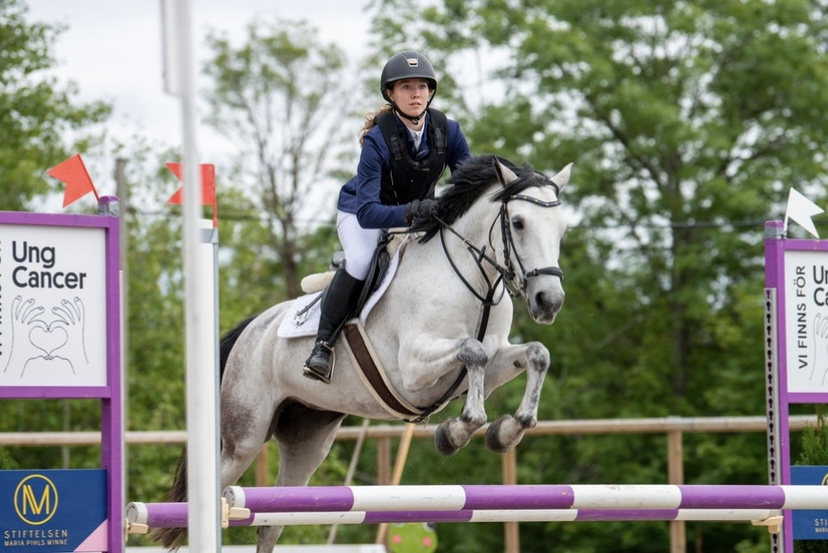

Tilda's Hemsida
Här kan du läsa om mig
Min bakgrund
Jag heter Tilda Öström Linde och är 20 år gammal. Jag bor just nu med min familj och mina husdjur utanför Eskilstuna men ska snart
flytta till Västerås.
I gymnasiet läste jag media och design och gick där lite in på programmering av hemsidor. Efter gymnasiet gjorde jag
värnplikten i Enköping på Ledningsregementet med en
ganska teknisk inriktning, det var förvånansvärt kul med tanke på att jag tidigare
avskytt tekniska saker.

Mina intressen
Jag har så länge jag kan minnas varit en hästtjej, jag har ridit sedan jag var tre år gammal men har tyvärr aldrig haft möjligheten
till att ha egen häst.
Det har dock aldrig stoppat mig från att jobba, träna och tävla med hästar. Förutom att hänga i stallet umgås
jag mycket med mina vänner och pojkvän. Jag älskar att lyssna på musik
och spelar själv piano.
Förutom det tycker jag mycket om att vara ute och gå promenader eller springa.
